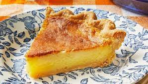

Buttermilk Pie

Description
This recipe is for a Buttermilk Pie. An old school recipe that has been around for a long time
but never gets old. The recipe can make 2 normal pies or one deep pie.
Ingredients
- 2 Unbaked Pie Crusts or 1 Deep Unbaked Pie Crust
- 1 Stick (1/2 Cup) Butter
- 3 Tbsp. Flour
- 3 Eggs
- 1 Cup Buttermilk
- 2 Cups Sugar
- 1 Tsp. Vanilla
- Dash of Nutmeg (Optional)
Steps
- Preheat oven to 350 F
- Soften butter
- Add sugar to butter, cream together well
- Beat eggs
- Add flour and beaten eggs to mixture. Beat well
- Stir is buttermilk, vanilla and nutmeg
- Pour into unbaked crust
- Bake for 45 to 50 minutes or until top begins browning
- Let cool completely before serving
Home